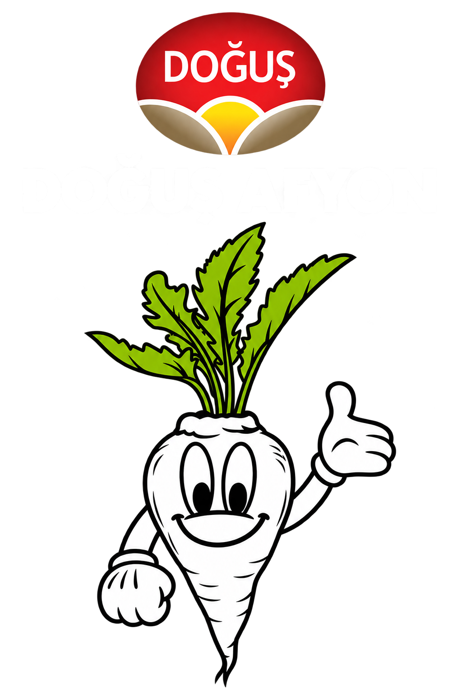
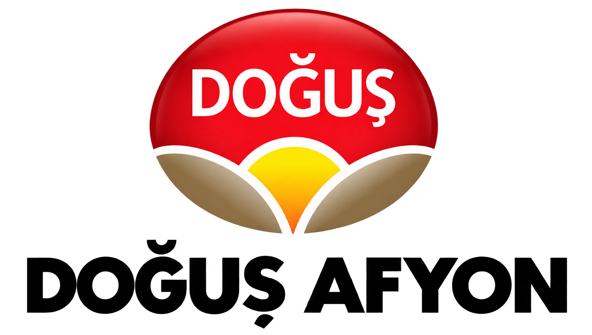

İki seçenek de statik taslaktır; tıklama çalışmaz. Menü adları, ikonlar ve logo uygulamadakiyle birebir aynıdır — yalnızca stil farklıdır.

Mürekkep zemin, her iki temada da koyu kalır. Aktif sayfa sol vurgu çizgisi + mavi katmanla işaretlenir. İçerik alanı açıkken güçlü bir kontrast kurar.

Açık zemin korunur; her menü ögesi ikon rozetli bir hap olur. Aktif sayfa dolgulu mavi hapla işaretlenir, grup başlıkları ince çizgiyle biter.